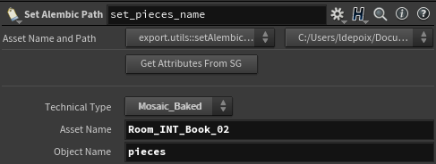

Modeling Tasks
All scenes part of the Modelings Steps need to have the proper hierarchy (please see this page automated tools).
Inputs |
Outputs |
|---|---|
Modeling (.ma, .abc) |
Modeling
In this task state, the artist must create the asset normaly like any realistic object.
{kind=link}
Exemple of a correctly modeled book.
Retopo
The next step of the process is to convert the modeling to mosaics.
To do that, the previously published ABC from Modeling need to be imported inside of Houdini.
{kind=link}
Simple graph for converting a book to mosaics.
- Steps:
Importing the ABC inside of Houdini. Also you need to unpack and convert the mesh to allow editing.
Make the graph to generate mosaics (Don’t forget to use the normal node to set them on Points instead of Vertices).
Don’t forget to use the Set Alembic Path node after doing modeling to keep the groups on export.
 Example of a setup to set the path inside of an alembic.
Use the Alembic To Publish node to save the alembic in the appropriate publish directory (everything is setup by using SGTK).
{kind=link}
UV
This step is really important because the rigging departement need a structured hierarchy for automation.
- Steps:
Create the structure by using the script provided [this page].
Import the previous steps:
The modeling need to be stored in the MI_GRP.
The retopolo need to be stored in the folowing directories:
Mosaic_Baked –> For the actual pieces.
Mosaic –> Joints, important for shading.
REMOVE ALL THE NAMESPACES FROM THE SCENE.